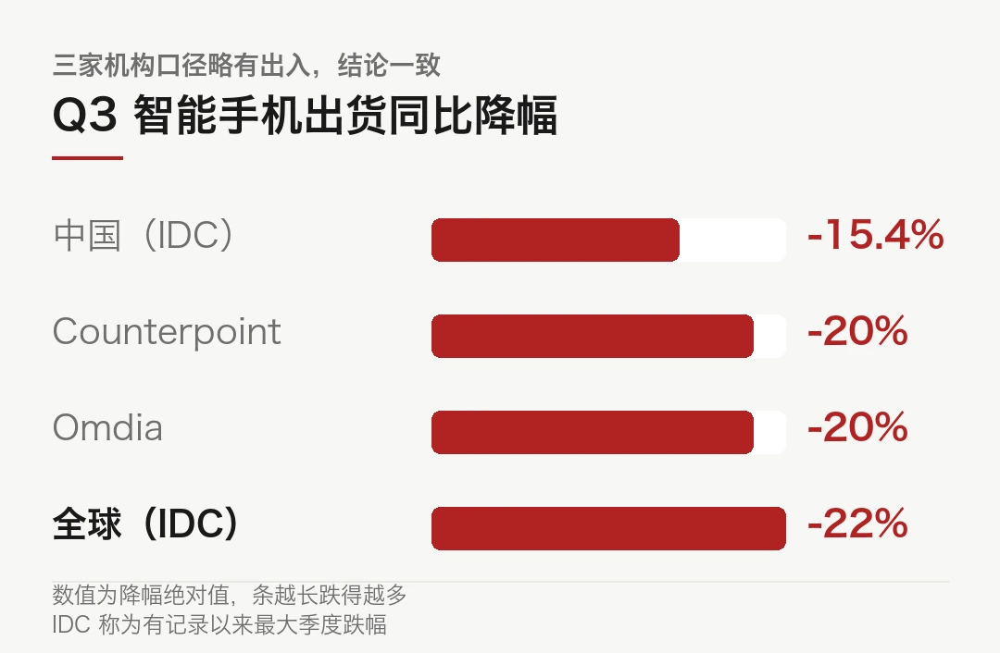
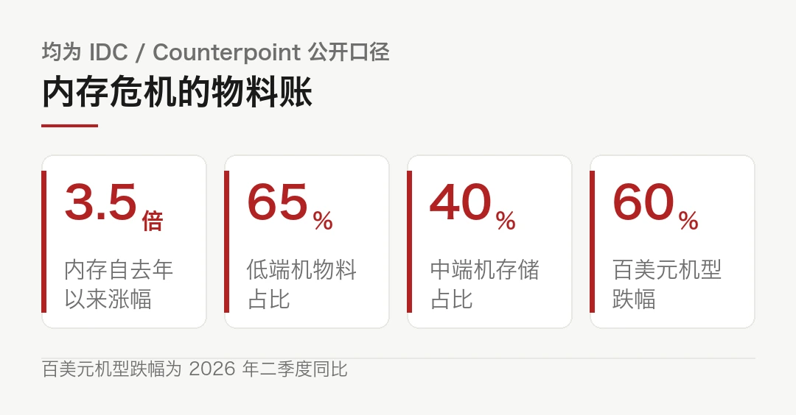
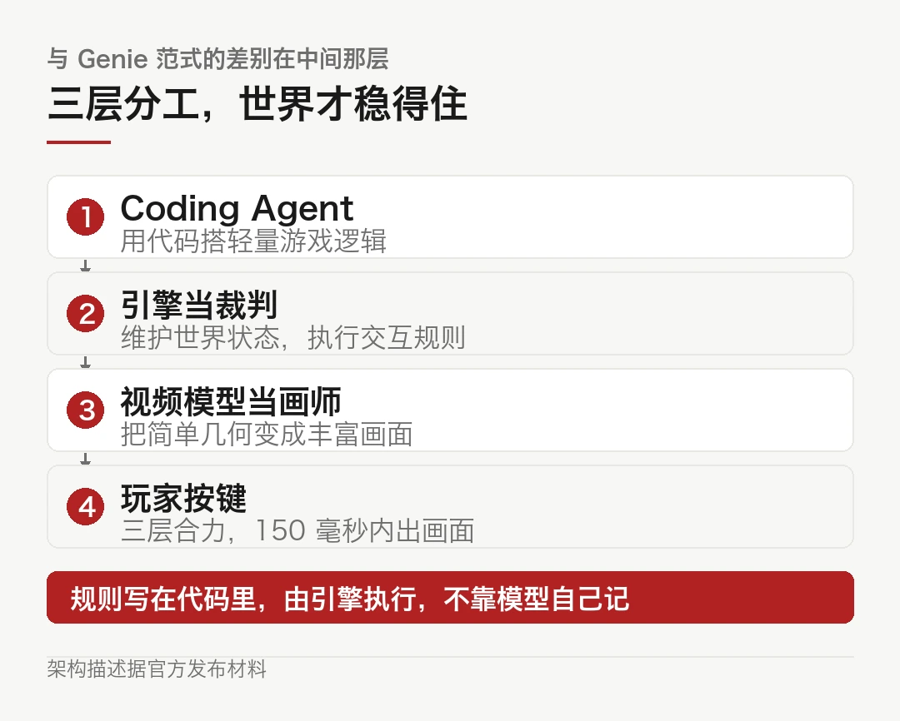
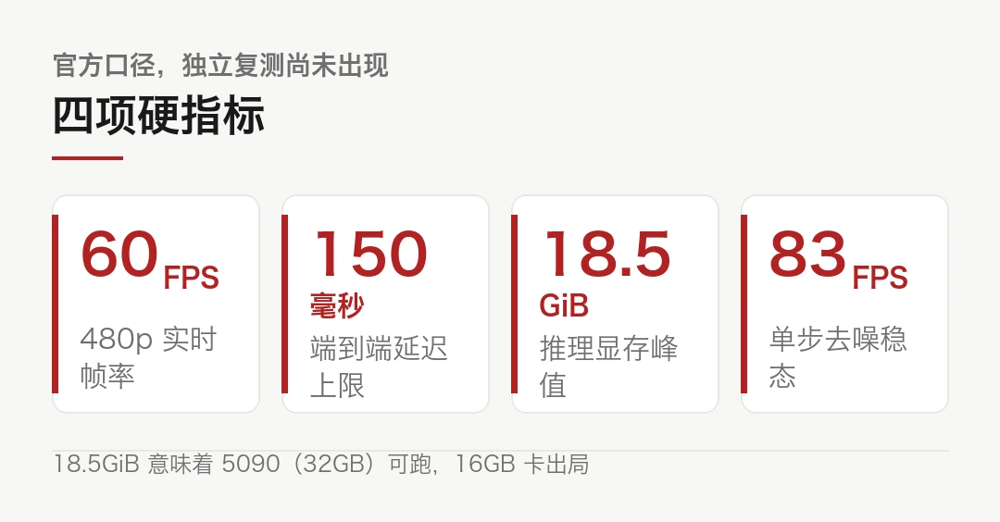
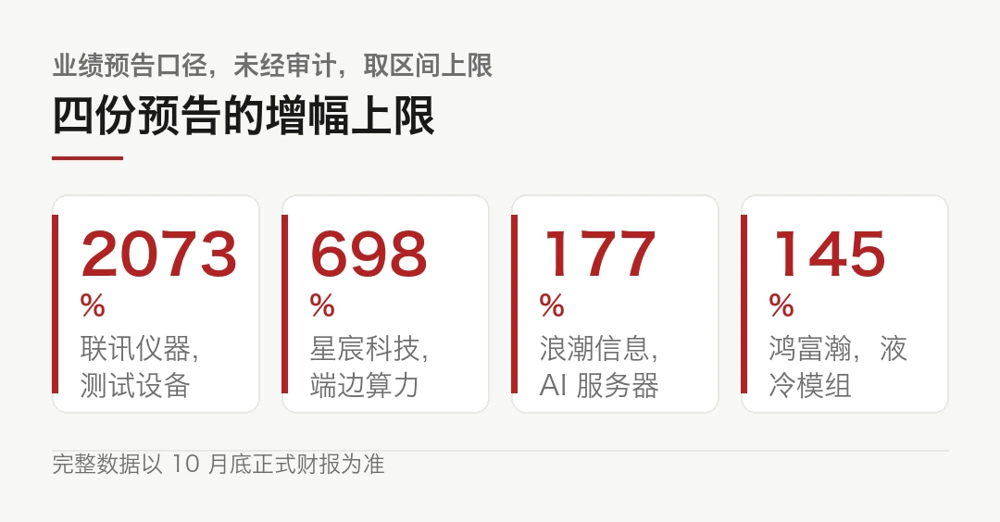
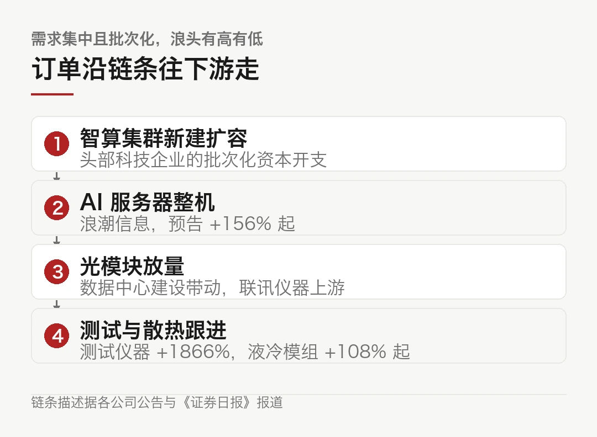
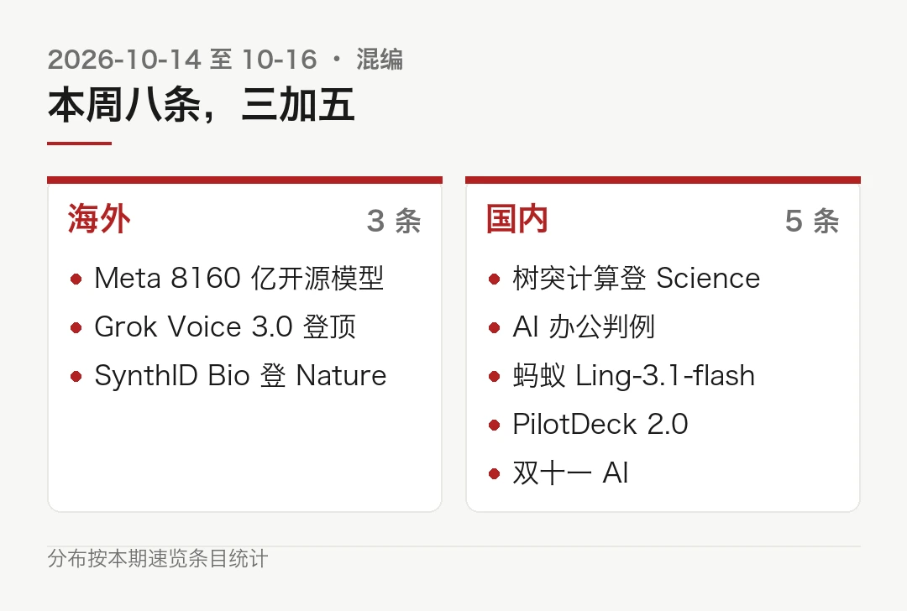
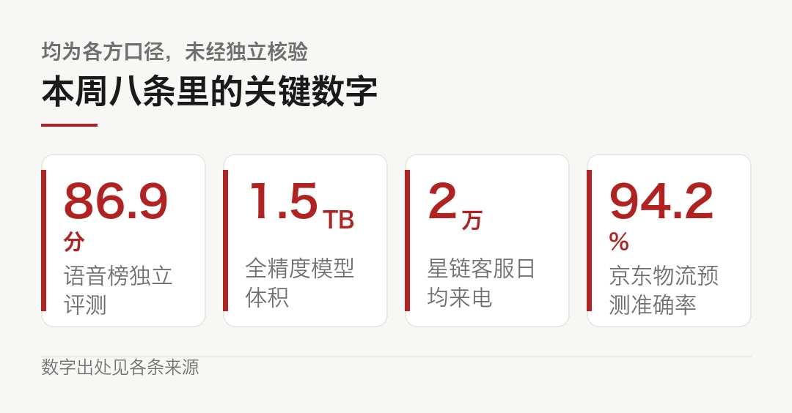

01全球手机出货跌 22%，手机厂在替 AI 买单
华强北做了十多年手机生意的一个档口老板，最近对媒体说了句大实话。以前新机上市，大家抢着问有没有货。现在用她的原话说，「纯过日子」。
货越来越贵，买的人越来越少。这门生意两头受气的样子，第三季度的数据给出来了。
- 先看这三条：Q3 全球智能手机出货同比 -20% 到 -22%，创 2012 年以来同期最低；中国 5790 万台，同比 -15.4%，比上半年的 -4% 明显加深
- 推手是内存。DRAM 和 NAND 自去年以来涨约 350%，内存已占低端机物料成本 65% 以上
- 判断放在前头：需求没有消失，是 AI 数据中心把存储产能吃走了。手机厂在替 AI 买单
手机厂不是被消费者抛弃的，是被数据中心挤出去的。颗粒就那么多，出价高的人先拿走。
一、数字有多难看
三家机构的口径略有出入，结论一致。Counterpoint 和 Omdia 给的全球降幅是 20%，2012 年以来同期最低。IDC 更狠，-22%，2.553 亿部，有记录以来最大的季度跌幅。
中国市场没好到哪去。IDC 口径 5790 万台，同比 -15.4%。上半年这个数字还只有约 4%，一个季度，跌速翻了近四倍。
说真的，价格端在反着走。手机零售价年内涨了约 20%，涨得比谁都坚决。量跌价升，四个字就是今年手机行业的全部。
厂商表现也分了层。三星以 23% 的全球份额守第一但出货也跌了，苹果份额涨到 22%。小米最疼，出货从 4340 万部掉到 3070 万部，同比 -29.2%，前三大厂商里摔得最重的那一个。
为什么偏偏是小米和 OPPO 这类厂商先挨打？21IC 的数据把逻辑讲明白了，OPPO 出货 3910 万降到 2560 万，vivo 从 2790 万降到 1910 万，三家中国厂商在中低端市场占比高，而内存涨价对低价机的杀伤力最大。
二、内存是这场寒流的源头
把镜头对准物料清单，事情就清楚了。
IDC 研究总监纳比拉·波帕尔给了一个数，内存价格自去年以来已上涨约 350%，而且还在涨。一个季度环比涨八成（Counterpoint 口径的 Q2 数据），这已经不叫涨价，叫跳价。
落到整机上是一串连锁反应。低端机的物料成本里，内存占了 65% 以上。100 美元以下机型去年全球还卖了 1.73 亿部，今年二季度这个价位段的出货跌了近 60%，多家厂商已经削减甚至退出入门级产品线。
更标志性的一条：DRAM 已经超过处理器，成了部分旗舰机型里最贵的单项零件。手机史上头一回，最贵的不是芯片大脑，是它的记性。
| 环节 | 发生了什么 ||---|---|| 内存价格 | 自去年以来 +350%，仍在涨 || 低端机物料 | 内存占 BOM 65% 以上，百美元机型 Q2 出货跌近 60% || 旗舰机物料 | DRAM 超过处理器，成为最贵单项 || 整机售价 | 零售价年内 +20%，量跌价升 |

麻烦在于最后一行。成本翻着涨，整机售价只能温和跟涨，因为消费者不接。多出来的成本，厂商自己咽下，这就是档口那句「卖得越来越贵，但不一定赚得更多」的账本来源。
三、钱在链条上换了地方
手机厂让出去的利润没有消失，它挪了个地方。
三星电子 10 月 8 日给出指引，Q3 营业利润约 107.4 万亿韩元，同比 +782.5%，单季首次破百万亿韩元，连续第四个季度创纪录（路透社口径，正式财报 10 月 29 日出）。
有意思的是三星自己就站在两头。存储部门赚到的钱，很大一块正是自家手机部门多付出去的。路透的报道把话说得很直白，存储涨价在利好三星半导体业务的同时，也在挤压三星自己的手机和消费电子业务的利润率。

左手赚的右手吐出去，一家公司里演完了整条产业链。推手是 AI 数据中心，HBM 和常规 DRAM 的产能被大量挪去喂服务器，手机的供应份额被压到角落。分析师预计这个缺口到 2027 年都补不上，Omdia 甚至判断，手机行业要等 2028 年才有温和复苏。
同一笔钱，从手机厂的损益表，搬进了存储厂的损益表。中间的手，是 AI。
四、AI 救得了场吗
先说厂商的应对，方向出奇一致，都在讲 AI。
阶跃 10 月 13 日发布大模型原生智能体手机 STEPX Neo，全栈价 3999 元，先行版送 12 个月、每月百亿词元额度。OPPO 携手 Manus 做智能体入口，豆包的手机助手在持续升级。
AI 真能把人拉回门店吗？讲道理，把它当成换机的理由，眼下还没被证明。AI 拍照、通话摘要、修图，这些功能「有了更好」，但没有一个「没有不行」。
你想想看，上一轮真正拉动换机的是 5G 和影像，那两样是人人用得上的东西。智能体手机解决的是「替我操作 App」，这个需求有多硬，市场还没投票。
消费者那边倒是先投了一票。Counterpoint 的年度调研显示，未来六个月有购机计划的人里，63% 已经注意到手机在涨价，中国这个比例是 81%。换机周期被拉长到了四年左右。
用涨价最凶的零件，去做说服别人换机的功能，这门生意的算术不好看。
五、如果你也在这条链上
回到我在制造这行看事情的习惯，三条判断。
第一，别把 -20% 读成需求消失。手机是慢置换品，换机周期从三年拖到四年，出货量就是这么掉的。需求在延后，不是蒸发。
第二，内存的紧，短期无解。产能扩出来要时间，AI 那边还在加码。机构预期 2026 全年出货再跌 16.7% 到约 10 亿部，IDC 还提醒成本压力会延续到 2027 年大部分时间。这两年的物料账，都不会好看。
第三，盯住低端市场。百美元机型跌六成，入门级产品线在收缩。这一段塌掉，伤不到旗舰买家，伤的是整个行业未来的换机基数。今天买不起千元机的人，明天也不会是旗舰机的客户。
卖手机的觉得日子难，卖存储的觉得好日子刚开始。都对。只是这两份心情，出自同一张物料清单。
本文信息来源
- 中国基金报 — 手机不好卖了，AI 能救场吗？（2026-10-16） · chnfund.com
- 网易科技 — 内存涨价 350%，全球智能手机出货量暴跌 20%：创 14 年来最差纪录（2026-10-16） · 163.com
- 21IC 电子网 — 内存危机血洗手机市场：Q3 出货暴跌 22%，小米成 TOP3 最惨玩家（2026-10-16） · 21ic.com
- 腾讯新闻 — 双十一前夕线下探营：换机周期拉长至四年，手机市场旺季不旺？（2026-10-14） · news.qq.com
- 上海证券报 — 争夺终端定义权，智能体手机行业迎来新博弈（2026-10-15） · 163.com
- The Hindu BusinessLine — Samsung projects nearly nine-fold jump in Q3 operating profit on AI chip demand（2026-10-08） · thehindubusinessline.com
02按下按键，AI 当场给你画一个世界
先说这个东西是什么。据中国经济网等报道，昆仑万维 10 月 15 日发布并开源了 Matrix-Game 4.0，一款跑在单张消费级显卡上的视频大模型游戏。你按方向键，画面当场生成，没有任何一张贴图是预先画好的。
从「看 AI 生成视频」到「亲手玩 AI 生成的世界」，中间隔的那道坎叫实时。这回的数字是，一张 RTX 5090，480p、60 帧，从按键到画面响应低于 150 毫秒。
- 一句话上手：开源的视频世界模型，单张 5090 实时跑，480p 60 帧，延迟低于 150 毫秒
- 关键数字：显存峰值 18.5GiB，单步去噪稳态 83FPS，端到端延迟低于 150 毫秒
- 跟以往不一样的地方：引擎管世界状态，视频模型只管画画，规则不靠模型自己记
三个人分工，世界才稳得住
这套架构是这次真正的新东西，多说两句。
Coding Agent 用代码搭出轻量的游戏逻辑。引擎当裁判，持续维护世界状态、执行交互规则，往外输出结构画面和动态语义条件。视频模型是画师，只负责把简单几何变成好看的画面。
代码定义规则，引擎管状态，模型管画面。三层各干各的，谁也不越界。
以往的世界模型（Genie 那一路）不是这个做法，它让模型一个人把物理、规则、画面全担了。昆仑万维在通稿里有句话说得挺准，那是 Genie 范式没真正解决的问题，「世界是否在被认真管理」。

问题出在哪，你想想看就明白。一个模型既当裁判又当运动员，玩着玩着，墙会自己消失，物品会凭空刷新。规则写在代码里、由引擎执行，这件事才真的稳。
麻烦在于，这套分工对工程的要求也高。引擎每一步都要把状态喂回给视频模型，150 毫秒的预算要摊给推理、渲染和传输三段，任何一段超时，体验就垮。官方口径是端到端低于 150 毫秒，这是发布材料里最难掺水的数字，也是最值得现场复测的一条。
数字都摆在这

说真的，这组数字里我最看重的是延迟。帧率不够可以忍，120 帧的动画和 60 帧的动画，玩半小时之后区别不大。但延迟是另一回事，超过 200 毫秒，操作和画面对不上，人脑立刻就察觉到「假」。
150 毫秒以内，才谈得上「玩」。
冷静的部分
第一，480p 不是 3A 画质。官方说法是后续会加 refiner 提分辨率，那是以后的事。
第二，「游戏」目前指轻量游戏。不是开放世界，不是物理引擎拟真，是能跑、能玩、规则清楚的小场景。拿它对标 3A 是自找失望。
第三，18.5GiB 的显存峰值，把门槛划得很清楚。5090 是 32GB 显存，装得下还有余。4080 那档 16GB，直接出局。那它离你的显卡到底有多远？先看显存，再看你想不想为「一个能玩的世界」付这张门票，它不便宜。
第四，多人联机的视角一致性还没解决。官方自己也把它列进了后续计划。一个人的世界先跑通了，一群人的世界还得等。
```bash
# 示意写法，不是真实 API。开源仓库里有可改编的游戏代码git clone https://github.com/Matrix-Game/Matrix-Game # 仓库名以官方发布为准
# 用自然语言改玩法：把跳跃高度调低，再加一个雨天
# 创作和调试的门槛，被压到了提示词这一层```
自然语言改玩法这件事，价值可能比跑分大。游戏原型开发、个性化定制、UGC，原来各有一道技术墙，现在墙挪到了你会不会写提示词。
我准备这么试
这事对行业的含义，比跑分有意思。游戏原型开发、个性化定制、UGC，原来各有一道技术墙，现在墙挪到了你会不会写提示词。门槛这一挪，玩的和做的人就要换一批。
三条验收里能过两条，这东西就不只是演示视频了。
本文信息来源
- 中国经济网 — 昆仑万维正式发布首款消费级显卡视频大模型游戏（2026-10-15） · i1.ce.cn
- 中证网 — 昆仑万维：发布消费级显卡视频大模型游戏 并同步开源（2026-10-15） · cs.com.cn
- 中国网科技 — 昆仑万维诞生世界上第一款消费级显卡视频大模型游戏，同步开源（2026-10-15） · tech.china.com.cn
- 证券时报 e 公司 — 昆仑万维：正式发布首款消费级显卡视频大模型游戏（2026-10-15） · view.inews.qq.com
- 国际金融报 — 昆仑万维诞生世界上第一款消费级显卡视频大模型游戏，同步开源（2026-10-15） · ifnews.com
03四份业绩预告连着看，AI 的钱落到了车间里
10 月 13 日到 15 日，几份业绩预告先后挂出来。放在一起读，比单看哪一份都有意思。说真的，这类公告平时我只扫一眼，今天这份名单值得逐行看。
浪潮信息预计前三季度归母净利润 38 亿到 41 亿元，同比增长 156.40% 到 176.64%。联讯仪器给的是 19 亿到 21 亿元，同比增长 1866% 到 2072.95%。后一个数字我盯着看了半天。两千个点的增幅，第一反应不该是鼓掌，是去查基数。查完再往下读，答案在第二节。

一、四份预告，四个环节
先说清楚性质。这些都是业绩预告，财务部门的初步测算，未经审计。浪潮在公告里专门写了一句「具体财务数据将在三季度报告中详细披露」。预告不是财报，数字有区间，区间本身就是模糊地带。
但方向都指向同一个地方。
浪潮是 AI 服务器，公司口径说人工智能产业快速发展、服务器市场需求旺盛。联讯仪器做通信测试仪器，逻辑链是数据中心建设加速，光模块厂扩产，测试设备跟着走。星宸的算力板卡在端边侧放量。鸿富瀚的液冷板模组上了量产线。
服务器整机、测试仪器、端侧芯片、散热件。四个环节，一条链。
顺着这条链再补一家。杰创智能预计前三季净利 3670 万到 4940 万元，同比增长 61.16% 到 116.93%，公司口径是新智算云集群持续交付并进入计费周期。它跟前面几家不同，不做设备生意，赚的是按月计费的云服务钱。链上有人赚硬件的钱，有人赚运营的钱。
二、订单的形状
中国电子商务专家服务中心副主任郭涛给《证券日报》的说法，是这轮景气最好的注脚：订单主要来自全球头部科技企业智算集群的新建与扩容，这类需求具备集中性、批次化资本开支的特征。
集中，批次化。这两个词在制造业里听着不陌生。
它意味着订单从不均匀分布，一波一波地来。赶上波的年份，财报漂亮。波与波之间，产能空着。
今天的预告增幅，有一部分是这一波浪头的高度，不全是永久性的经营水平提升。

浪潮自身的对比数据也透着这个节奏。2024 年归母净利润增长 28.65%，2025 年只有 5.2%，今年前三季度直接跳到 156% 以上。加速是真实的，但加速曲线的形状，和资本开支的浪头对得很齐。
三、盘子有多大
新京报的报道里引了中商产业研究院的数，2026 年中国 AI 服务器市场规模预计达 3500 亿元。浪潮在 9 月的人工智能计算大会上发了元脑 SD200Ultra 超节点服务器，公司称单机可承载 2.8 万亿参数大模型运行，Token 生成时延 5.85 毫秒（厂商口径）。
这些数字放在一起看，需求端是实的。数据中心在建。订单在落地。上游的测试仪器和散热件跟着吃订单。
这些已经是签进合同的钱，讲故事的成分不多。
回到一个制造业的人最关心的问题，这波景气能持续多久？我给不出准数，但有一条线索可以盯。新京报那篇报道提到，算力网已纳入国家「六张网」战略布局，需求正从互联网头部客户向金融、制造、政务、能源渗透。客户面越宽，浪头与浪头之间的空档就越短。
四、冷的部分
讲道理，预喜的背面有三件事。一件都不能省。
第一，预告区间本身就宽。联讯的增幅从 1866% 到 2073%，上下限差了两百多个百分点。最后落在哪，要等 10 月底的正式财报。其实吧，预告是财务部门的初步测算，浪潮自己在公告里都写了「未经会计师事务所预审计」。
第二，需求集中。客户是全球头部科技企业的智算集群，数得过来的那几家。资本开支的节奏一变，订单的浪头说退就退。今天的增幅里有多少能沉淀成长期经营水平，现在下不了结论。
第三，看业绩别只看净利预告。制造业的诚实指标在现金流和存货里。订单集中交付的季度，利润表很漂亮，存货和应收账款也悄悄在变厚。财报出来之后，这两张表比增幅数字更值得翻。
还有一层别忘了。这些订单聚在头部客户手里，对厂商是收入，对行业却是议价权的不对等。
大客户一压价。上游很难说不。
同一季度，卖手机的在喊冷。造算力设备的在报喜。
钱没有变少，它只是换了车厢。
本文信息来源
- 中国经济网 — AI 硬件需求持续兑现 多家算力上市公司三季报预喜（2026-10-15） · m.ce.cn
- 新华财经 — 浪潮信息：2026 年前三季度业绩预告（2026-10-13） · cnfin.com
- 新京报 — 浪潮信息前三季度净利预增 156.40%-176.64%，政策与需求双轮驱动业绩兑现（2026-10-13） · bjnews.com.cn
- 证券时报 — 浪潮信息前三季净利润同比增长 156.40%~176.64%（2026-10-14） · toutiao.com
- 中宏网 — 浪潮信息业绩加速增长：预计今年前三季度净利润增超 1.5 倍（2026-10-13） · gp.zhonghongwang.com
04这一周，AI 往法院走了一步，也往大脑里走了一步
这一周剩下的事不少，八条，国内外分开。先说海外那三条大的。
说真的，第一条的规格超出预期。

海外 · Meta 放出 8160 亿参数的开源模型
Muse Spark Open，8160 亿总参、每词元激活约 420 亿，256 个专家里选 8 个。
上下文 100 万词元，原生吃文本、图像、音频、视频。
全精度 checkpoint 约 1.5TB。Meta 跟苹果合作做了 MLX 优化，两台 M5 Ultra 的 Mac Studio（各 512GB 统一内存）拼起来才装得下。
Meta 自称 6 项测试第一、超 GLM 5.3 和 Kimi K3，厂商口径，等独立测。其实吧，更值得停下来听的是 Meta 首席 AI 官 Alexandr Wang 的表态，原则上不对最强性能的模型开源。开源的是次强的，最强的留在手里。
当年互相嘲讽的两家，如今为了「让 Mac 跑大模型」坐在了一张桌上。
海外 · xAI 的语音模型登顶独立榜单
Grok Voice 3.0 在 Artificial Analysis 的语音转语音指数拿 86.9 分排第一，GPT-Live-1 是 83.2，Gemini 3.8 Live 是 82.6。价格没涨，还是每分钟 0.08 美元。
别只看榜首，细则里有分化。接打电话的任务成功率 94.8%，但用户偏好 Elo 1070 只排第三；客服场景的 τ-Voice 测试 71.6%，仍输 GPT-Live-1 的 74.5%。
Starlink 客服每天约 2 万通来电、七成无人工介入，这是 xAI 自己给的数，没有基线。你想想看，七成这个数要是真的，客服行业的账就得重算。
要是宣传，那也是放了个卫星。
海外 · DeepMind 给 AI 设计的蛋白盖了个章
SynthID Bio 发在《Nature》。思路是把溯源水印嵌进 AI 生成的蛋白序列或结构里，水印跟着基因走，序列被化学合成、体外表达成真蛋白之后依然检测得出，且不破坏生物活性。
结构那条路更狠，直接微调 AlphaFold3 的扩散网络，把水印编进模型权重。三个靶点做了湿实验，带水印与不带水印的成药命中率和结合亲和力持平。
AI 生成的序列污染公共数据库这件事。终于有了技术对策。
国内 · 大脑里的「两个部门」，被拍到了
中科院脑智卓越中心徐宁龙团队登《科学》，首次拿到树突参与灵活决策的直接实验证据。
实验设计很巧。小鼠判断声音高低，但「高」「低」的界限会无预警地变，它只能从奖励反馈里一遍遍推断规则。成像镜头盯着它动脑的时候，同一个神经元里的分工出现了：树突编码推断出来的规则，胞体表征感觉信息，两个信号在细胞内部叠加，驱动决策。
因果也验了。团队用光遗传学，就是刚拿了 2026 诺贝尔生理学或医学奖的那项技术，专门关掉树突的信号，决策输出立刻明显变弱。
背后是一段七十年的接力。1951 年张香桐提出顶端树突有电兴奋性，他的学生吴建屏在组会上反复追问这个问题，吴的学生徐宁龙用近十年把它做完。每只小鼠要先训练两个月，再开颅、标记、记录。
审稿人给的评价是「堪称英雄式」。
国内 · 用 AI 办公被辞退，法院判公司输了
北京朝阳法院审了一起案子。员工在公司领导推荐下用第三方 AI 辅助办公，被公司以泄密为由解除劳动合同。
法院三层意思。员工无主观故意，公司制度没有明确禁止用 AI 办公，也没有证据证明实际泄密与损害。一审判违法解除，撤销解除通知，双方继续履行合同，公司赔年终奖差额等损失。判决已生效。
在企业普遍没写 AI 办公规范的当下，这纸判例等于提醒了一句话，用旧制度管新工具，管不住。
麻烦在于，多少公司要等自己当一次被告才肯把规范写出来？
国内 · 蚂蚁开源 Ling-3.1-flash，部署砍半
约 560B 总参、25B 激活，100 万上下文。Artificial Analysis 智能指数 41，输出速度约 210 token/s，混合调用价约每百万词元 0.19 美元。关键动作是路由专家用 MXFP4 量化，权重从约 534GB 压到 292GB，Hopper 部署从 8 卡降到 4 卡。API 限时 2.5 折。
国内 · PilotDeck 2.0 开源，轻量底座干翻大模型
清华 THUNLP、面壁、OpenBMB 联合开源的 Agent 工作台，内置 Word、Excel、PPT 三类 Skills 并自动做多模态校验。WorkbuddyBench 测试里与 Claude Code 同处 80 分档，换用 35B-A3B 轻量底座后以 79.4 分居首。智能路由让社媒任务费用降超 75%，支持本地部署和飞书、微信接入。
国内 · 双十一开打，AI 是今年的增量
京东的 AI 覆盖零售、物流等 3000 多个场景，超脑大模型 3.0 的包裹量预测准确率 94.2%，数字人 JoyAvatar 服务超 9 万商家。抖音开放豆包 AI 导购、罗盘 AI 问数，飞鸽智能客服大促期间限时免费。

---
本文信息来源
- 财联社 — Meta 发布美国最强开源大模型（2026-10-16） · toutiao.com
- AI Parabellum — Meta Releases Muse Spark Open, a Giant Open-Weight Model Built for Coding Agents（2026-10-16） · aiparabellum.com
- CNMO 科技 — xAI 发布 Grok Voice 3.0 语音模型 定价每分钟 0.08 美元（2026-10-15） · 163.com
- 搜狐健康 — DeepMind 推出 SynthID Bio，给 AI 设计蛋白打上生物水印（2026-10） · sohu.com
- 上观新闻 — 大脑里的「微型计算机」被看见了！上海科研团队首次拍到树突「算」决策（2026-10-16） · toutiao.com
- 网易 — 员工在领导推荐下使用 AI 辅助办公，却被公司以「泄密」为由辞退，法院判了（2026-10-16） · 163.com
- 腾讯研究院 — AI 速递 20261016（2026-10-16） · sohu.com
- 经济观察网 — 天猫、京东、抖音竞逐「双十一」：规则做减法、AI 做加法（2026-10） · jg-static.eeo.com.cn
本文首发于公众号「YITENG」。原文：daily.html
留言